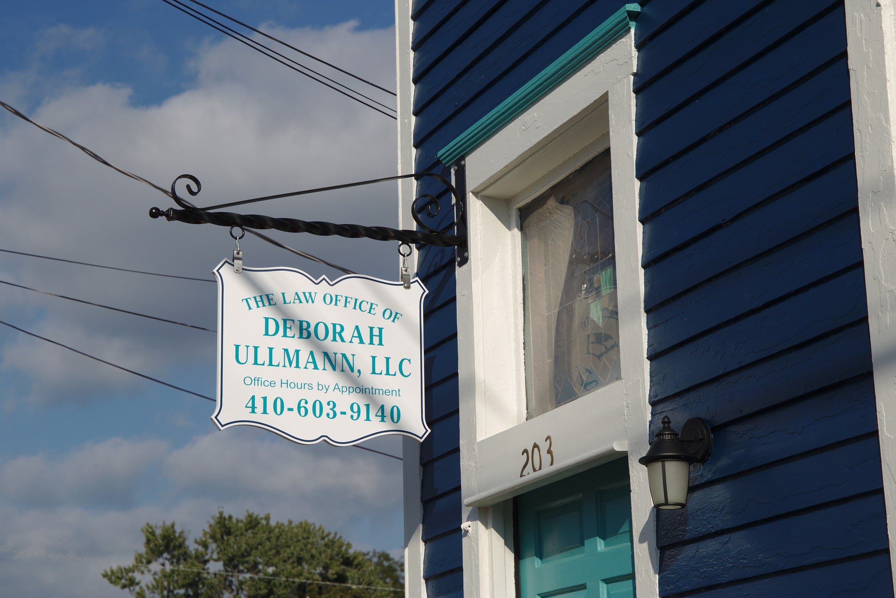

- University of Maryland, College Park, B.A., 1983
- University of Baltimore School of Law, J.D., 1986
- Admitted to the Maryland Bar, 1987
- Admitted to the Supreme Court Bar, 1996
- Member of:
- Maryland State Bar Association
- Worcester County Bar Association
- Somerset County Bar Association
- Women's Bar Association of Maryland
- National Association of Counsel for Children

The Law Office of Deborah Ullmann, LLC is a general practice firm located in Pocomoke City, Maryland serving the legal needs of the lower Eastern Shore.
Deborah Ullmann
I represent clients in a full range of legal matters. I believe that my greatest strength is the quality of service that I provide and my commitment to educating clients about their legal situation so that they feel comfortable and knowledgeable about the proceeding. I believe I am responsive to my clients and strive to maintain a high level of communication. If you are interested in high quality legal services at a reasonable fee, please feel free to contact me for a consultation.
Contact MeJurisdictions Served
Worcester County
Ocean City and Snow Hill
Somerset County
Princess Anne
Wicomoco County
Salisbury
Juvenile
Ms. Ullmann represents children charged with crimes and is experienced with the unique procedures of the delinquency system and can advocate for appropriate dispositions and treatment. Ms. Ullmann has a contract to represent abused and neglected children in CINA (Child In Need of Assistance) proceedings in Wocester and Somerset Counties.
Criminal/Traffic
Ms. Ullmann represents clients in District Court criminal matters. She handles cases such as theft, controlled dangerous substances possession, assaults, peace + protective orders, and violation of probation. She can also represent you in traffic matters such as DUI/DWI, driving while suspended/revoked, reckless driving, and speeding. Ms. Ullmann can also assist with expungement of criminal records
Wills, Estates and Guardianships
Ms. Ullmann can assist you in drafting the docments you need such as Wills, Powers of Attorney, and Advance Directives. She can assist you with handling the estate of your deceased loved one. She can also assist with obtaining guardianship over the person or property of a loved one who can no longer handle their own affairs.
Administrative
Ms. Ullmann can assist you in your dealings with local and state administrative agencies. She has successfully argued before the Office of Administrative Hearings in appeals of MVA and DSS decisions. She is also familiar with Maryland procurement law and Public Information Act requests.
Family
Ms. Ullmann can represent you in your divorce or child support proceedings.
Appellate
Ms Ullmann has represented clients in both of Maryland's appellate courts, the Court of Special Appeals and the Court of Appeals. She has written briefs, drafted Petitions for Writ of Certiorari, and participated in numerous oral argumetns. Her appellate experience spans her practice areas and include family, juvenile, and administrative law cases. She has also recently filed a Petition with the US Supreme Court and is awaiting their decision on accepting the case. (Potential link to court of appeals argument)
My Resume
-
Education and Bar Membership
-
Legal Experience
- Maryland Office of the Attorney General – Motor Vehicle Administration
- Maryland Office of the Attorney General – Central Collections
- Baltimore City Department of Social Services
- Child Advocacy Group
- Ullmann & Wakefield, P.A.
-
Teaching Experience
- University of Maryland Eastern Shore – Part-time professor
- Juvenile Delinquency
- Deviant Behavior
- Wor-Wic Community College – Part-time professor
- Sociology
- Community College of Baltimore County – Part-time professor
- Sociology
- American Government
- Anne Arundel Community College – Part-time professor
- Criminal Law
- Baltimore City High School Social Studies Teacher
- University of Maryland Eastern Shore – Part-time professor
-
Community Involvement
- Pocomoke Area Chamber of Commerce
- Chincoteague Cultural Alliance
- Chincoteague Community Tennis Association
- Chincoteague Garden Club
The Law Office of Deborah Ullmann
203 Second St.
Pocomoke City, MD 21851
Main: (410)-603-9140
Fax: 1-(855)-603-9140
Email: dullmannesq@gmail.com